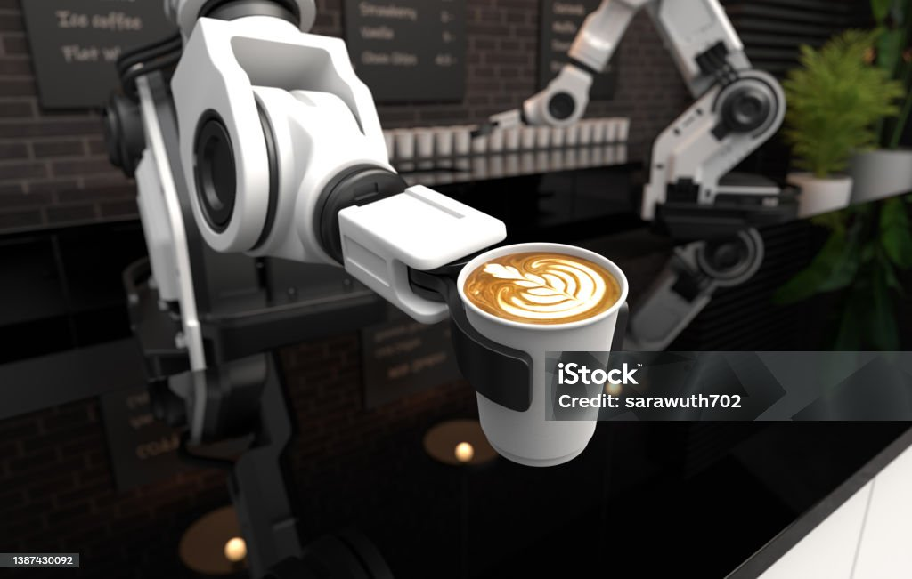

☕ De la tradición a la modernización tecnológica
Transformación Digital en la Caficultura
La modernización de la caficultura en México implica diversos aspectos, desde la adopción de tecnologías de producción y procesamiento hasta la promoción de prácticas agrícolas sostenibles y la diversificación del mercado. El objetivo es mejorar la productividad, la calidad del café y la competitividad de los productores, especialmente aquellos de pequeña escala.
Aspectos clave de la modernización:
- Tecnología y capacitación:
- Sostenibilidad:
- Diversificación y valor agregado:
- Investigación y desarrollo:
- Financiamiento y apoyo a pequeños productores:
Se promueve la adopción de tecnologías de producción, como la utilización de maquinaria moderna y técnicas de manejo del suelo y la fertilización, para mejorar la eficiencia y la calidad del grano. También se fomenta la capacitación de los productores en buenas prácticas agrícolas y en el manejo de la cosecha y procesamiento del café.
Se busca la producción de café de manera sostenible, respetando el medio ambiente y las comunidades locales. Esto incluye la promoción de prácticas de cultivo orgánico y la adopción de sistemas agroforestales.
Se fomenta la producción de cafés especiales y la diversificación de productos derivados del café, para aumentar el valor agregado de la producción y mejorar la rentabilidad de los productores.
Se promueve la investigación y el desarrollo de nuevas variedades de café, así como la mejora de las técnicas de procesamiento y comercialización, para fortalecer la competitividad del sector.
Se implementan programas de financiamiento y asistencia técnica para apoyar a los pequeños productores, quienes representan la mayoría del sector cafetalero mexicano.
Evolución de la Producción
Comparativa de métodos tradicionales vs. modernos:
| Aspecto | 1980-2000 | 2020-actualidad |
|---|---|---|
| Selección de granos | Manual | Escáneres hiperespectrales |
| Tueste | Experiencia artesanal | Control por termopares digitales |
| Productividad | 50 kg/día | 500 kg/día |
La innovación en métodos de preparación ha abierto nuevas posibilidades en cuanto a sabor y experiencia, gracias a la introducción de nuevas técnicas y herramientas.
Frente a este panorama, invertir en herramientas tecnológicas como sensores de temperatura, RFID y computadores móviles, ya que permiten:
- Conectividad para rastrear los granos de café desde el origen hasta el consumidor final
- Preservación de la calidad del producto durante el transporte
- Gestión de inventarios de manera eficiente
- Visibilidad de la ubicación del grano o de los empaques de café
- Una cadena de suministro más eficiente, transparente y conectada

Recursos Digitales
Explora estas plataformas mexicanas sobre café y tecnología:
Café de Innovación: Lo necesario relacionado con innovación y emprendimiento
Sostenibilidad Tecnológica
Las nuevas máquinas reducen hasta un 40% el consumo energético y utilizan materiales 100% reciclables, marcando un hito en producción eco-amigable.